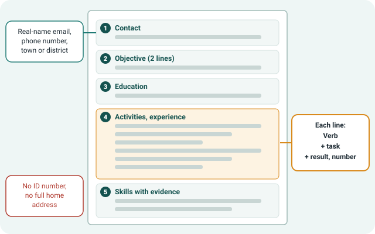

K2 · Speaking and writing clearly › Level 2 Starting
Write a one-page CV when you have no work experience yet
This lesson completes Sheet 3: One-page CV. Printable CV frame.
1. Objectives
- Write a one-page CV with 5 parts, matched to one specific job ad.
- Write each activity line using the formula verb + task + result.
2. Retrieval warm-up
- When you read a job ad, which two types of criteria do you separate?
- Name the 3 signs to stop.
Answers
- Required and preferred.
- Very high pay for vague work; a request for money; a request to keep original documents.
Review: Reading job ads.
3. Explanation
A CV (curriculum vitae, a summary of your studies and experience) helps an employer decide whether to interview you. They usually read very fast. So your first CV should be one page.

The five parts of a CV:
- Contact. Full name, phone number, an email using your real name, your town or district. No ID number.
- Objective. Two lines: what work you want, and what you can contribute there.
- Education. School, subject, years. Include grades if they are good.
- Activities and experience. Even without a job, you have plenty to list: group projects, clubs, volunteering, helping with a family business, selling online.
- Skills with evidence. "Excel: built an expense sheet for a class of 40" beats "Excellent Excel skills".
The one-line formula: verb + task + result, with a number if possible.
Rewriting a CV line
- Member of a volunteer club.
- Good communication skills.
- Helped with the family shop.
- Organised 2 book drives, collecting 300 books.
- Advised customers at a school fair stall, selling all 80 portions.
- Kept the daily accounts for the family grocery for 6 months.
Match it to the job ad. Take your job ad checklist from the last lesson. Each required criterion should have at least one CV line as evidence. Put that line at the top of part 4.
One test rule: for every line on your CV, you must be able to tell it as a STAR example when asked. If you cannot, remove the line.
Photo: add one only if the ad asks for it. Save the file as a PDF with a clear name: "CV_FullName_Position.pdf".
4. Workplace example
Hypothetical scenario. Mia is applying for the part-time cashier job from the last lesson. Required: aged 18+, careful, available at weekends.
Part 4 of Mia's CV:
Activities
- Managed the class fund for 45 students in the 2025–2026 school year, publishing income and spending monthly with no errors.
- Sold goods at the faculty spring fair stall, taking payment and giving change to about 150 customers.
- Helped at the family grocery shop at weekends for 2 years.
Objective: "Seeking a part-time cashier role in the evenings and at weekends. I bring care and accuracy in handling money and customers."
Why this works: the "careful" criterion has two lines of evidence about handling money. "Available at weekends" is backed by the family shop. Every line can be told as an example.
5. Practice
Hypothetical scenario. Leo from Lesson 1 applies for "Part-time evening IT support" at a computer shop. Required: can install an operating system and office software; polite with customers. Leo has reinstalled computers for 6 people. He built an attendance sheet in Google Sheets for his faculty football team. He staffed the faculty help desk on enrolment day.
Write part 4 (3 lines) and part 2 (objective) for Leo's CV.
Hint 1
Start each line with a verb: installed, guided, designed, staffed, answered.
Hint 2
"Polite with customers" needs a line of evidence. The help desk work is a strong candidate.
Model answer
- Reinstalled the operating system and office software on 6 computers for people I know, then showed them how to use them.
- Answered questions from about 100 new students at the faculty help desk on enrolment day.
- Designed a Google Sheets attendance tracker for a 25-member faculty football team, used all semester.
Objective: "Seeking part-time evening IT support work. I bring computer setup skills and clear, friendly explanations for customers."
(Details are hypothetical, for illustration.)
6. Self-check
Choose an answer. Every option has an explanation.
Question 1. Which CV line follows the formula verb + task + result?
-
Not quite. There is no specific verb and no result.
-
Correct. Correct. It has a verb, a specific task and a measurable result.
-
Not quite. These are self-descriptions. An employer cannot check them.
Question 2. What should the Contact part of a CV include?
-
Correct. Correct. Enough to reach you, without exposing unnecessary information.
-
Not quite. Your ID number and full address are not needed at the CV stage.
-
Not quite. There is no phone number, and the email should use your real name.
Question 3. A job ad has the required criterion "punctual". What should you do on your CV?
-
Not quite. A self-claim is not evidence.
-
Not quite. You can still have evidence, and this is a required criterion.
-
Correct. Correct. Each required criterion should have one line of evidence.
Question 4. Your CV says "Managed the club's social media page", but you cannot say what you did. What should you do?
-
Not quite. If you cannot explain it when asked, the employer will doubt your whole CV.
-
Correct. Correct. Every CV line must work as a STAR example.
-
Not quite. Adding adjectives does not replace evidence.
7. Reflection
- Which line on your CV is hardest to tell as an example? Why?
- What experience had you never thought of as "experience", but now see you can put on your CV?
8. Real-world application
In the next 7 days, write a one-page CV for 1 ad you chose on Sheet 2. Ask someone to read it for 30 seconds, then ask: "What do you remember about me?" Revise until they remember what you want them to.
How to tell a CV line as a full example is covered in the lesson Tell a real example with STAR in interviews.
9. Metadata
| skill | K2 · Speaking and writing clearly |
|---|---|
| level | Level 2 · Starting |
| group | N2 |
| framework_map | CSfW: 2a Communicate for work; SkillsFuture CCS: Communication; NACE: Communication; Career and Self-Development (reference only) |
| original | Vietnamese version |
| updated | 2026-11-14 |
Finish the lesson
Mark it as done and the site suggests reviews after 1, 3 and 7 days. The data stays on your device only.
Suggested reviews: